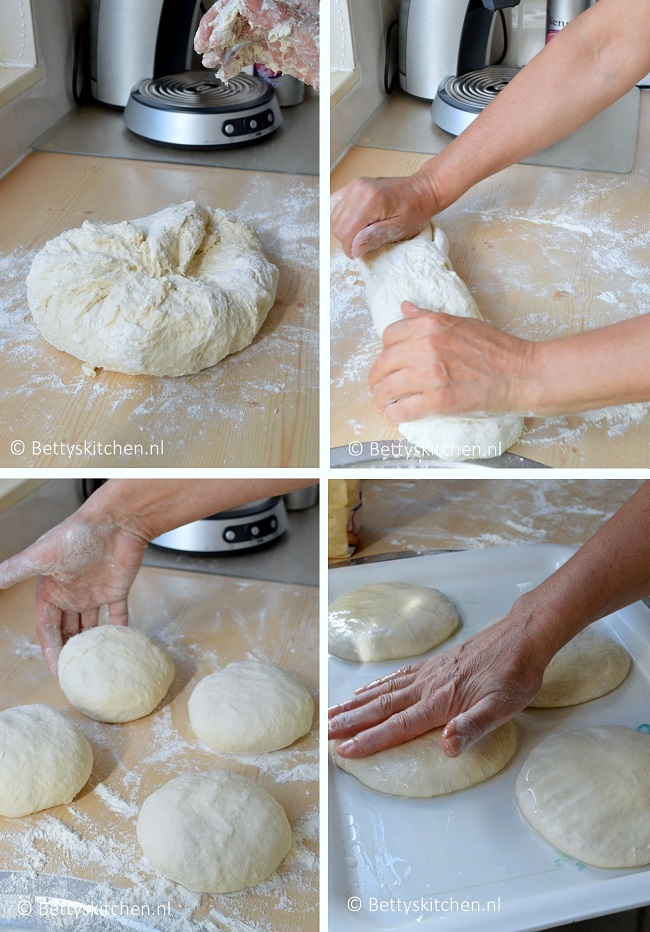

Bereidingstijd: 90 minuten
Recept is voor 3-4 personen
zo ziet het eruit. Het is gehakt opgerold in deeg.
het gerecht zie je vooral in Bosnie, maar het komt officieel van Turkse afkomst. Dit recept is het hoofdgerecht in het Balkan gebied.
Ingredienten deeg:
Ingredienten vulling:
Bereidingswijze:
Meng het zout en de bloem. Voeg geleidelijk lauwwarm water toe en meng totdat een compact deeg ontstaat. Bestrooi een werkblad met een beetje extra bloem en kneed hierop het deeg goed door. Dit doe je door de buitenkant van het deeg uit te trekken en in het midden van de deeg terug te duwen. Draai daarbij het deeg steeds een beetje rond. Hoe langer je kneed, des te beter de gluten zich ontwikkelen en je een mooi, soepel elastisch deeg krijgt.
Schenk op een grote plaat of 2 borden een laag olie. Verdeel het deeg in 2 stukken en vorm hier een bal van. Druk de bal zo plat mogelijk in de olie, keer om en zorg dat alles goed bedekt ligt in de olie. Deze zorg ervoor dat je het deeg straks heel dun kunt uitrekken. Laat ongeveer 10 minuten buiten de koeklast rusten.
Maak intussen de vulling: Pel en snipper de ui. Meng deze met het gehakt in een grote kom, en breng op smaak met de olie, peper en zout. Probeer geen compacte bal te vormen, maar houd het gehakt ‘brokkelig’, dit verdeeld straks makkelijker.
Verwarm de oven voor op 180 graden / 160 hetelucht. Leg het deeg op een theedoek of groot tafellaken en trek het met geoliede handen langzaam uit totdat je een dun vel krijgt. Als je deeg soepel genoeg is kun je een deeglap krijgen ter grootte van een halve eettafel, en zo dun als filodeeg. Verdeel de vulling erover en besprenkel deze heel licht met olie.
Trek nu één kant van het doek, waarop het deeg ligt, omhoog. Het deeg rolt vanzelf op en vormt een lange ‘worst’.
Wrijf een ovenschaal in met olie. Leg de burek,opgekruld als een grote ronde worst, in de ovenschaal. Of knijd in de lengte doormidden en vorm 2×2 kleine rondjes.
Besprenkel de bovenkant met olie, en bak de Burek ongeveer 45 minuten in de oven, totdat de bovenkant mooi goudgeel is.
Als je het gerecht zelf wilt maken klik dan hier